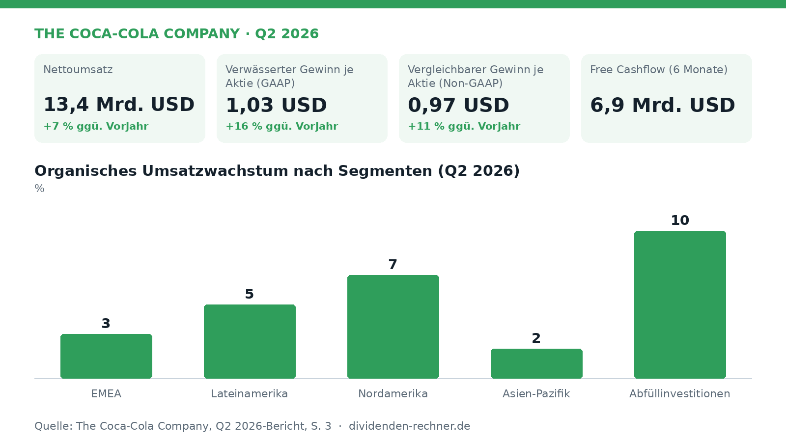

Zahlen
Coca-Cola hebt Jahresausblick nach starkem zweiten Quartal 2026 an
Coca-Cola steigert den Umsatz im zweiten Quartal 2026 um 7 Prozent und erhöht die Jahresprognose für Gewinn und Cashflow.

Die Coca-Cola Company hat die Ergebnisse für das zweite Quartal 2026 vorgelegt und gleichzeitig ihre Prognose für das Gesamtjahr angehoben. Getragen von einem weltweiten Mengenwachstum und soliden Preisanpassungen stieg der berichtete Nettoumsatz im Vergleich zum Vorjahresquartal um 7 Prozent auf 13,4 Milliarden USD.
Umsatz- und Gewinnentwicklung im Detail
Im Berichtszeitraum stieg der organische Umsatz (Non-GAAP) um 6 Prozent. Dieser Anstieg wurde maßgeblich durch ein Plus von 4 Prozent bei den Konzentratverkäufen sowie einen Zuwachs von 2 Prozent beim Preis-/Produktmix getrieben. Das globale Kistenvolumen (Unit Case Volume) legte um 5 Prozent zu.
Auch auf der Ergebnisseite verzeichnete Coca-Cola deutliche Fortschritte. Das operative Ergebnis nach GAAP wuchs um 9 Prozent auf 4,67 Milliarden USD. Die berichtete operative Marge verbesserte sich von 34,1 Prozent im Vorjahr auf 34,9 Prozent. Auf bereinigter Basis (comparable non-GAAP) lag die operative Marge bei 35,6 Prozent nach 34,7 Prozent im Vorjahreszeitraum. Der verwässerte Gewinn je Aktie (EPS) nach GAAP stieg um 16 Prozent auf 1,03 USD. Der vergleichbare Gewinn je Aktie (Non-GAAP) verzeichnete einen Zuwachs von 11 Prozent auf 0,97 USD, wozu Währungsvorteile positiv beitrugen.
Segmente und regionale Treiber
Die Entwicklung fiel in den einzelnen Regionen unterschiedlich aus. In Nordamerika wuchs der organische Umsatz um 7 Prozent, unterstützt durch ein Mengenwachstum von 3 Prozent und Preiserhöhungen von 4 Prozent. Das operative Ergebnis im Segment vergleichbar und währungsneutral legte hier um 12 Prozent zu.
In der Region Asien-Pazifik kletterte das Kistenvolumen zwar um 8 Prozent, allerdings sank der Preis-/Produktmix um 9 Prozent aufgrund von Produktmix-Effekten und Maßnahmen zur Preiserschwinglichkeit. Zudem verlor Coca-Cola in dieser Region Marktanteile bei alkoholfreien Verzehrfertiggetränken, da Anteilsverluste in Indien die Zugewinne in Japan und China überwogen. Das Segment Abfüllinvestitionen (Bottling Investments) verzeichnete ein organisches Umsatzwachstum von 10 Prozent und einen Anstieg des operativen Ergebnisses um 55 Prozent.
Bedeutung für Dividendenanleger und erweiterter Ausblick
Für Dividendeninvestoren sind neben der laufenden Ertragskraft vor allem der Cashflow und die Bewertung über Kennzahlen wie das KGV relevant. Der Cashflow aus der Geschäftstätigkeit belief sich in den ersten sechs Monaten des Jahres 2026 auf 7,5 Milliarden USD. Nach Abzug der Investitionen in Sachanlagen ergab sich ein Free Cashflow von 6,9 Milliarden USD.
Aufgrund der guten Geschäftsentwicklung hob das Management die Ziele für das Gesamtjahr 2026 an. Das organische Umsatzwachstum wird nun bei etwa 5 Prozent erwartet (zuvor 4 bis 5 Prozent). Der vergleichbare währungsneutrale Gewinn je Aktie ohne Übernahmen und Verkäufe soll um 7 bis 8 Prozent zulegen (zuvor 6 bis 7 Prozent). Für das Gesamtjahr prognostiziert das Unternehmen nun einen Free Cashflow von rund 12,4 Milliarden USD (zuvor etwa 12,2 Milliarden USD), basierend auf einem operativen Cashflow von 14,6 Milliarden USD und Investitionen von 2,2 Milliarden USD. Die Kapitalflussrechnung zeigt, wie viel davon an die Aktionäre ging: Coca-Cola zahlte im ersten Halbjahr 4,56 Milliarden USD an Dividenden. Rechnerisch sind das 67 Prozent des Free Cashflows (operativer Cashflow von 7,54 Milliarden USD abzüglich 0,68 Milliarden USD Investitionen). Rechnet man Aktienrückkäufe von 0,66 Milliarden USD hinzu, steigt der Anteil auf 76 Prozent. Der Vorjahreswert von 2,28 Milliarden USD ist kaum vergleichbar: Das Halbjahr endete 2026 am 3. Juli, im Vorjahr bereits am 27. Juni. Vermutlich fällt dadurch eine Quartalszahlung mehr in den Berichtszeitraum. Die Payout Ratio auf Basis des Ergebnisses je Aktie ergänzt diesen Blick, weil sie nicht von Zahlungsterminen abhängt.
Kritische Punkte und Unsicherheiten
Trotz der positiven Gesamtzahlen bestehen Risikofaktoren. Höhere Einstandspreise sowie steigende Marketinginvestitionen belasteten die Marge teilweise. Zudem schlug sich die Preisgestaltung in Asien-Pazifik negativ im Preis-/Produktmix nieder. Weiterhin weist das Unternehmen auf anhaltende rechtliche Auseinandersetzungen mit der US-Steuerbehörde IRS hin, deren möglicher negativer Ausgang erhebliche Auswirkungen auf die künftige Steuerquote und Finanzlage haben könnte.
Die wichtigsten Zahlen im Überblick
| Kennzahl | Wert | Veränderung zum Vorjahr | Quelle |
|---|---|---|---|
| Nettoumsatz | 13,4 Mrd. USD | +7 % | S. 1 |
| Verwässerter Gewinn je Aktie (GAAP) | 1,03 USD | +16 % | S. 1 |
| Vergleichbarer Gewinn je Aktie (Non-GAAP) | 0,97 USD | +11 % | S. 1 |
| Free Cashflow (6 Monate) | 6,9 Mrd. USD | – | S. 2 |
Quelle: The Coca-Cola Company, Pressemitteilung zum Q2 2026 vom 2026-07-28. Keine Anlageberatung.
Hinweis: Dieser Text dient der allgemeinen Information und ist weder Anlage-, Steuer- noch Rechtsberatung. Kapitalanlagen sind mit Risiken verbunden, bis hin zum Totalverlust.